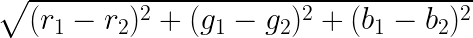

All About Wallpaper Theme Converter
2022-05-10
Wallpaper Theme Converter (WTC) is a webpage that converts any image to any colour palette. You can adjust the colours to a wallpaper to better match your setup, terminal, and/or IDE. There are some theme presets such as Gruvbox, Nord, Solarized, Catppuccin, Dracula, and a custom theme.
Inspired by Gruvbox Factory and ImageGoNord, WTC was born from the idea of creating a tool that combines image conversion with popular color schemes.
Examples

How it works
WTC uses the HTML canvas element to draw the image and apply color changes. When a user selects any of the buttons, the RGB values of the palette are assigned to a list/array. The selected color palette is displayed by creating a new div element that shows a square block for each color.
Upon clicking the convert button, the application calculates the closest color in the palette for each pixel using a 3D distance formula, where the x, y, and z coordinates represent RGB values.

After calculating the distance for each color in the palette, a sorting algorithm finds the closest match. This closest color is then associated with the original pixel value. Once all calculations are complete, the new image data is used to reconstruct the image.
You can take a look at the source code here if you want to see exactly what I'm explaining.
Highlights
As one of my first JavaScript projects, I am proud of what I have achieved with WTC. Within a day, I had it working with Gruvbox, and I have continued to add features almost every day. The UI is minimal, which aligns with my preferences. I particularly enjoy how users can see the palette when they click on any of the themes, and how the code is flexible enough to accommodate additional themes as needed. The most challenging part of adding preset themes is finding and converting the hex values of the theme into RGB values, a process simplified by an Excel spreadsheet.
Downfalls
WTC, like Gruvbox Factory and ImageGoNord, is not without its limitations. Images with gradients or complex color patterns may not convert as accurately as flat, pixel art images. Additionally, the output image by default may appear more posterized compared to the original due to the limited number of colors in the color palettes.
What's next?
Currently, I am satisfied with WTC's functionality, but I plan to rework the custom theme menu to improve the user experience for adding and removing swatches. I also intend to enhance the palette display when the custom theme button is pressed. In the future, as I gain a deeper understanding of image processing, I hope to implement algorithms that produce smoother images.
Conclusion
Like many projects, my code is a collection of StackOverflow answers, especially the canvas code, which was completely new to me. I hope you find WTC useful and informative. Please leave an issue on the GitHub repository if you have any problems with the program.